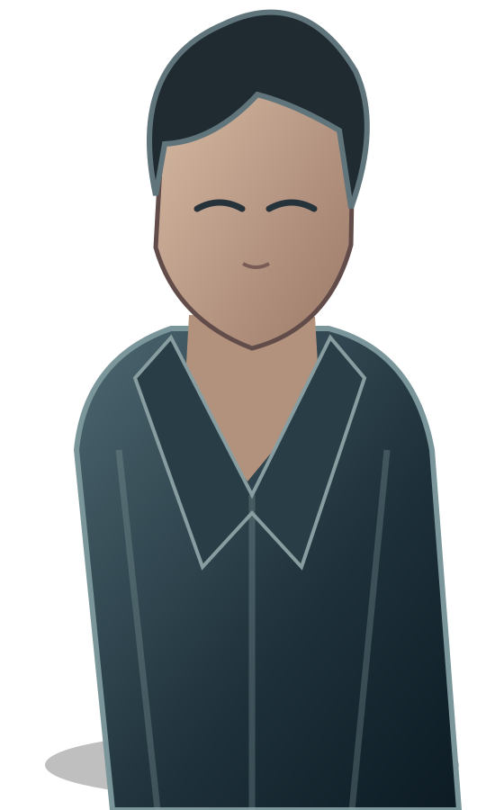

<!doctype html><html lang="ko"><head><meta charset="utf-8"><meta name="viewport" content="width=device-width,initial-scale=1,viewport-fit=cover"><meta name="theme-color" content="#101720"><title>아포칼립스에서 살아남기 — 모바일 프로토타입</title><style>
:root{color-scheme:dark;font-family:system-ui,'Noto Sans KR',sans-serif;background:#101720;color:#edf1f6}*{box-sizing:border-box}body{margin:0;min-height:100dvh;background:linear-gradient(150deg,#111b27,#16191d 60%,#0a1016)}button{font:inherit;cursor:pointer}button:disabled{opacity:.45;cursor:not-allowed}.wrap{max-width:760px;margin:auto;min-height:100dvh;display:flex;flex-direction:column}.top{display:flex;align-items:center;justify-content:space-between;padding:14px 16px;border-bottom:1px solid #344252;background:#101720e8}.brand{font-weight:800;font-size:14px;letter-spacing:.05em}.small{color:#a9bac9;font-size:12px}.toolbar{display:flex;gap:6px;flex-wrap:wrap}.tool{background:#263444;color:#fff;border:1px solid #526477;border-radius:8px;padding:8px 10px;font-size:12px}.stage{position:relative;min-height:245px;flex:1;display:flex;flex-direction:column;justify-content:flex-end;padding:25px;background:radial-gradient(ellipse at 55% 65%,#56606a55,transparent 50%),linear-gradient(155deg,#243344,#0d161e 75%);overflow:hidden}.stage:before{content:"";position:absolute;inset:0;background:repeating-linear-gradient(90deg,transparent 0 69px,#10182135 70px 72px);pointer-events:none}.scene-tag{position:relative;letter-spacing:.12em;color:#d3b985;font-size:12px;font-weight:800}.scene-name{position:relative;font-size:clamp(25px,6vw,39px);font-weight:900;line-height:1.3;text-shadow:0 3px 12px #0008}.stage-note{position:relative;color:#bdc8d3;font-size:13px;margin-top:12px}.panel{background:#101923ef;border-top:1px solid #637082;padding:17px 16px max(22px,env(safe-area-inset-bottom));min-height:330px}.speaker{color:#eacb8d;font-weight:800;font-size:14px;margin-bottom:10px}.dialogue{white-space:pre-line;line-height:1.8;font-size:16px;min-height:90px}.choices{display:grid;gap:9px;margin-top:17px}.choice{background:#223346;border:1px solid #53677c;border-radius:10px;color:#fff;text-align:left;padding:13px 14px;line-height:1.5}.choice:active{background:#39526a}.muted{color:#a9b6c3}.status{display:flex;flex-wrap:wrap;gap:8px;padding:9px 16px;background:#1a2836;border-bottom:1px solid #344252;font-size:12px}.pill{border:1px solid #455a6b;border-radius:30px;padding:4px 8px}.overlay{position:fixed;inset:0;background:#000c;display:flex;align-items:center;justify-content:center;padding:16px;z-index:5}.modal{background:#192736;border:1px solid #5d7084;border-radius:16px;padding:22px;width:min(100%,480px);max-height:88dvh;overflow:auto}.modal h2{margin:0 0 10px}.modal p{line-height:1.65}.modal-actions{display:flex;gap:8px;flex-wrap:wrap;margin-top:16px}.primary{background:#b59a65;color:#0e141b;border:0;border-radius:9px;padding:12px 15px;font-weight:800}.secondary{background:#293a4c;color:#fff;border:1px solid #63758a;border-radius:9px;padding:12px 15px}.notice{border-left:3px solid #c4a878;padding:10px 12px;background:#26313e;margin:12px 0;font-size:13px;line-height:1.6}.menu{padding:24px 18px;display:grid;gap:12px}.menu h1{font-size:clamp(26px,7vw,42px);margin:12px 0}.menu p{color:#b6c4d2;line-height:1.7}.menu button{text-align:left}.hidden{display:none!important}pre{white-space:pre-wrap;overflow-wrap:anywhere;font-size:12px}.end{text-align:center;padding:20px}.end h1{color:#e8cf99}input{accent-color:#c6a66a}
/* 392: visual metadata styling */
.vn-hospital{background-image:linear-gradient(#1a344755,#07131a44),url('assets/vn/abandoned-hospital.svg')}.vn-archive{background-image:linear-gradient(#1a344755,#07131a44),url('assets/vn/archive-room.svg')}.vn-passage{background-image:linear-gradient(#1a344755,#07131a44),url('assets/vn/danger-passage.svg')}.vn-mood-tense{filter:contrast(1.16) brightness(.72)}.vn-mood-dim{filter:brightness(.56) saturate(.7)}.vn-mood-neutral{filter:none}
/* 391: scene-specific styling and integrated true preview */
.vn-archive{filter:saturate(.85)}.vn-passage{filter:brightness(.85)}.vn-integrated-character{opacity:.72;filter:drop-shadow(0 12px 24px #0009) saturate(.65)}
/* 390: mobile portrait visual-novel presentation */
.vn-screen{position:relative;isolation:isolate;min-height:100dvh;height:100dvh;overflow:hidden;background:#0b141d;color:#fff;touch-action:manipulation}.vn-bg{position:absolute;inset:0;background:linear-gradient(#1a344755,#07131a44),url('assets/vn/abandoned-hospital.svg') center/cover no-repeat;animation:vn-enter .45s ease-out}.vn-bg:after{content:"";position:absolute;inset:0;background:linear-gradient(180deg,#0008 0%,transparent 30%,#0002 55%,#02070cdd 100%)}.vn-character{position:absolute;left:50%;bottom:15%;height:69%;max-width:95%;transform:translateX(-50%);object-fit:contain;object-position:bottom;filter:drop-shadow(0 16px 20px #0008);pointer-events:none}.vn-top{position:absolute;top:env(safe-area-inset-top,0px);left:0;right:0;padding:14px 16px;display:flex;align-items:center;justify-content:space-between;gap:10px;z-index:2}.vn-top button{background:#07131bc9;color:white;border:1px solid #ffffff55;border-radius:12px;padding:11px 14px}.vn-title{font-size:12px;max-width:54%;text-shadow:0 2px 8px #000}.vn-bottom{position:absolute;left:0;right:0;bottom:0;z-index:2;padding:22px 18px calc(24px + env(safe-area-inset-bottom,0px));min-height:30%;background:linear-gradient(180deg,transparent,#08131de0 18%,#08131df5 100%)}.vn-speaker{font-weight:800;color:#f3dfb2;margin-bottom:10px}.vn-dialogue{font-size:clamp(17px,4.3vw,23px);line-height:1.8;white-space:pre-line;text-shadow:0 2px 5px #000b;min-height:80px}.vn-hint{text-align:right;font-size:12px;color:#c4d5df;margin-top:8px}.vn-choices{display:grid;gap:8px;margin-top:10px;max-height:36dvh;overflow:auto}.vn-choices .choice{background:#102333e8;border-color:#a5c5cf77}.vn-status{font-size:11px;color:#d2dfe5;line-height:1.5;margin-bottom:9px}.vn-tap{position:absolute;inset:65px 0 0;z-index:1;background:transparent;border:0;width:100%;cursor:pointer}.vn-tap:focus-visible{outline:2px solid #fff;outline-offset:-5px}@keyframes vn-enter{from{opacity:.45;transform:scale(1.025)}to{opacity:1;transform:scale(1)}}@media(min-width:760px){.vn-screen{max-width:600px;margin:auto}.vn-bottom{padding-left:26px;padding-right:26px}}@media(prefers-reduced-motion:reduce){.vn-bg{animation:none}}
</style><script defer src="engine/core.js"></script></head><body><div id="app" class="wrap"></div><script>
'use strict';
const KEY='zombie-vn-prototype-v1',GALLERY='zombie-vn-gallery-v1';
const HEROES=[['HYJ','한유진',28,'간호사','COM-02'],['CSY','차서윤',29,'전직 경찰','COM-03'],['LCR','이채린',25,'전직 산업설비 정비사','COM-05'],['SHR','서하린',27,'전직 감염병 연구기관 데이터 분석가','COM-07'],['JSA','정세아',26,'전직 라디오 진행자','COM-09']];
const TRUE_IDS=HEROES.map(h=>h[0]+'_TRUE');
const SCENES=[
{id:'IT-001',name:'다섯 개의 기록',speaker:'주인공',text:'다섯 개의 결말. 하지만 이건 내가 지금 살아온 다섯 개의 과거가 아니야.\n내가 확인해야 할 건 누군가의 결말이 아니라, 내 기억에 남아 있는 빈자리야.',choices:[['기록의 공통점만 살핀다','galleryMetadataViewed'],['현재 회차의 사실부터 확인한다','currentRunReviewed'],['안전 상태부터 확인한다','safetyReviewed']]},
{id:'IT-002',name:'존재하지 않는 기억',speaker:'주인공',text:'이 부분만 이상해. 사건이 없었던 건지, 내가 기억하지 못하는 건지.\n비어 있다는 사실만으로 누군가가 지웠다고 말할 수는 없어.',choices:[['기억 공백의 시점을 비교한다','memoryGapCompared'],['공백을 가설로 남긴다','memoryGapHypothesis'],['현재 퇴로를 확인한다','retreatChecked']]},
{id:'IT-003',name:'최초의 동의',speaker:'주인공',text:'내가 원해서 시작한 일이었어?\n그때의 내가 누군가를 지키려 했다는 사실과 지금의 내가 모든 결과를 받아들여야 한다는 건 다른 문제야.',choices:[['최초 동의의 범위를 검증한다','initialConsent'],['보호 대상의 신원을 가린다','identityProtected'],['기록의 출처를 조사한다','initialSource']]},
{id:'IT-004',name:'두 번째 서명',speaker:'주인공',text:'처음에 정한 범위를 넘어서는 변경 기록이 있어.\n누가 변경했고 어떤 권한을 근거로 삼았는지 확인해야 해.',choices:[['변경 이력과 권한을 대조한다','extensionAudit'],['추가 동의 자료를 조사한다','extensionConsent'],['확정되지 않은 혐의는 보류한다','extensionHypothesis']]},
{id:'IT-005',name:'서로 다른 진실',speaker:'주인공',text:'유진의 환자 기록, 서윤의 대피 명령, 채린의 설비, 하린의 보고, 세아의 방송….\n서로 다른 사건에는 서로 다른 증거가 필요해. 내 기억의 문제가 그 사람들의 과거까지 설명하는 건 아니야.',choices:[['현재 회차에서 확인된 사실만 채택한다','currentFacts'],['증언의 출처를 보존한다','testimonyAttributed'],['불명확한 연결은 가설로 남긴다','crossCaseHypothesis']]},
{id:'IT-006',name:'봉인의 경계',speaker:'주인공',text:'처음 정한 범위와 이후 기록이 달라. 실제로 무엇이 적용됐는지 확인해야 해.\n내가 내린 선택이 다른 사람에게 모든 선택을 넘겨준다는 뜻은 아니었어.',choices:[['최초 봉인 범위를 대조한다','originalScope'],['확장 적용 사실을 검증한다','extensionApplied'],['기억 회복의 위험을 확인한다','recoveryRisk']]},
{id:'IT-007',name:'지워진 허가',speaker:'주인공',text:'최초 동의는 있었어. 하지만 추가 봉인에 대한 동의는?\n서명이 없다는 것만으로 결론을 내리지 않겠어. 다른 승인 경로가 있었는지도 확인해야 해.',choices:[['동의와 변경 기록을 독립 대조한다','independentCrossCheck'],['추가 승인 주장과 실제 적용을 검증한다','extensionConsentAbsent'],['검증 부족으로 판단을 보류한다','consentDeferred']]},
{id:'IT-008',name:'남겨진 사람들',speaker:'주인공',text:'누가 살아 있는지, 누가 어디에 있는지. 그리고 누가 나와 이야기하기를 원하는지.\n응답이 없다는 건 사망했다는 뜻이 아니야.',choices:[['현재 인물별 위치와 생존을 확인한다','peopleChecked'],['연락에 대한 개별 동의를 구한다','contactConsent'],['접촉하지 않고 개인정보를 보호한다','privacyPreserved']]},
{id:'IT-009',name:'마지막 퇴로',speaker:'주인공',text:'저 문을 지나가면 기록에 접근할 수 있을지도 몰라. 하지만 돌아올 수 있을지는 아직 몰라.\n진실을 찾는다는 이유로 생존을 포기할 필요는 없어.',choices:[['안전한 대체 경로를 확인한다','safeRoute'],['현재 위치에서 재계획한다','replan'],['위험 경로를 검토한다 — 2차 확인 필요','danger']]},
{id:'IT-010',name:'기억의 문',speaker:'주인공',text:'이제 구분할 수 있어. 내가 선택한 봉인과 내가 허락하지 않은 봉인은 다른 일이야.\n하지만 검증되지 않은 사실을 아는 척하며 끝내지는 않겠어.',choices:[['검증된 주장만 최종 기록한다','verifiedTruth'],['부족한 검증은 보류한다','truthPending'],['독립 검증을 다시 수행한다','independentCheck']]},
{id:'IT-011',name:'되찾을 권리',speaker:'주인공',text:'내가 알고 싶은 것과 다른 사람에게 알려도 되는 것은 달라.\n내 기억에 관한 선택은 다시 내가 해야 해.',choices:[['확인된 사실만 제한적으로 공개한다','disclosureLimited'],['보호 정보는 비공개로 보존한다','disclosureProtected'],['기억 회복을 거절하고 사실만 인정한다','recoveryDeclined']]},
{id:'IT-012',name:'봉인 너머의 새벽',speaker:'주인공',text:'모든 질문에 답을 얻지는 못했다. 모든 사람을 구하지도 못했다.\n그때의 내가 누군가를 지키기 위해 내린 선택은 진짜였어. 하지만 그 선택을 이용해 내 기억을 더 빼앗을 권리는 누구에게도 없었어.\n기억하지 못하는 시간이 있어도, 나는 다시 선택할 수 있어.',choices:[['검증된 진실을 받아들이고 새벽을 맞는다','accept'],['부족한 사실을 다시 확인한다','review'],['현재의 안전과 선택을 먼저 지킨다','safety']]}
];
const REQUIRE=['initialConsent','initialSource','extensionAudit','extensionConsent','originalScope','extensionApplied','independentCrossCheck','extensionConsentAbsent'];
const $=s=>document.querySelector(s);let run=null;let gallery=loadGallery();
function loadGallery(){try{return JSON.parse(localStorage.getItem(GALLERY))||{unlockedEndings:[]}}catch{return {unlockedEndings:[]}}}
function saveGallery(){try{localStorage.setItem(GALLERY,JSON.stringify(gallery));return true}catch(e){alert('갤러리 저장 실패: '+e.message);return false}}
function fresh(){return {schemaVersion:1,runId:'run-'+Date.now()+'-'+Math.random().toString(36).slice(2,8),stateVersion:0,mode:'INTEGRATED_TRUE',sceneIndex:0,sceneId:'IT-001',route:{locked:false,heroineId:null,lockEventId:null},protagonist:{hp:100,injuries:[],infectionStage:0,positionId:'INTEGRATED_ARCHIVE',alive:true},characters:Object.fromEntries(HEROES.map(h=>[h[0],{met:false,alive:null,positionId:null,contactConsent:false}])),officialCompanionId:null,patients:{},survivors:{},inventory:{},noise:0,evidence:{},warnings:{},flags:{},completedScenes:{},processedEventIds:{},pendingAction:null,ending:{result:null,completionEventId:null},log:[]}}
function save(){if(!run)return false;try{const next={...run,stateVersion:run.stateVersion+1};localStorage.setItem(KEY,JSON.stringify(next));run.stateVersion=next.stateVersion;return true}catch(e){alert('저장 실패: '+e.message);return false}}
function restore(){try{const v=JSON.parse(localStorage.getItem(KEY));if(v&&v.schemaVersion===1&&v.mode==='INTEGRATED_TRUE'&&Number.isInteger(v.sceneIndex)&&v.sceneIndex>=0&&v.sceneIndex<SCENES.length&&v.protagonist&&v.flags&&v.processedEventIds)return v}catch{}return null}
function unlocked(){return TRUE_IDS.every(id=>gallery.unlockedEndings.includes(id))}
function esc(s){return String(s).replace(/[&<>"']/g,c=>({'&':'&amp;','<':'&lt;','>':'&gt;','"':'&quot;',"'":'&#39;'}[c]))}
function button(label,fn,cls='secondary'){const b=document.createElement('button');b.className=cls;b.textContent=label;b.onclick=fn;return b}
function modal(title,html,buttons){const d=document.createElement('div');d.className='overlay';const m=document.createElement('div');m.className='modal';m.innerHTML='<h2>'+esc(title)+'</h2>'+html;const a=document.createElement('div');a.className='modal-actions';buttons.forEach(([t,f,c])=>a.append(button(t,()=>{d.remove();f&&f()},c||'secondary')));m.append(a);d.append(m);document.body.append(d)}
function menu(){run=null;$('#app').innerHTML='<div class="top"><span class="brand">APOCALYPSE / VISUAL NOVEL</span><span class="small">393단계 · v1.9</span></div><div class="menu"><div class="small">좀비 비주얼 노벨</div><h1>아포칼립스에서<br>살아남기</h1><p>모바일 실행형 프로토타입. 본편 60장·720장면은 설계 구조만 등록되어 있으며 원본 대본 전체는 아직 탑재되지 않았습니다.</p><div class="notice">통합 트루 12장면을 시험 플레이할 수 있습니다. 핵심 증거의 독립 검증 자료는 미탑재되어 엔딩 판정은 보류됩니다. 일반 해금 조건은 개인 트루 5종 등록이며, 이 빌드에는 엔진 검증용 체험 모드가 별도로 있습니다.</div><div id="menuActions"></div><h3>갤러리 (프로토타입)</h3><p id="galleryInfo"></p><h3>본편 콘텐츠</h3><p>공통 10장 + 5개 개인 루트 각 10장. 원본 장면 데이터를 가져오기 전까지 본편은 실행되지 않습니다.</p></div>';const a=$('#menuActions');a.style.cssText='display:grid;gap:10px';a.append(button('통합 트루 시작 (정식 해금)',()=>{if(!unlocked())return modal('해금 조건 미충족','<p>다섯 히로인의 개인 트루 엔딩을 모두 등록해야 합니다. 이 프로토타입은 해당 개인 루트의 대본을 아직 탑재하지 않았으므로 정식 해금은 현재 불가능합니다.</p>',[['확인']]);start(false)},'primary'));a.append(button('통합 트루 체험 모드 시작',()=>start(true)));const old=restore();if(old)a.append(button('저장된 회차 이어하기',()=>{run=old;if(run.pendingAction){const pending=run.pendingAction;run.pendingAction=null;if(!save()){run.pendingAction=pending;return}modal('미확정 행동 복구','<p>종료 전에 확인되지 않은 위험 행동은 취소했습니다. 피해나 이동은 적용되지 않았습니다.</p>',[['계속',render]])}else render()}));a.append(button('공식 본편 탑재 현황',storyCoverage));a.append(button('전체 챕터 ID 목록',showIndex));a.append(button('제1장 복원 초안 플레이 (비공식 10장면)',loadChapterOneDraft));a.append(button('생존 시스템 테스트 (4장면)',loadSurvivalDemo));a.append(button('본편 대본 JSON 가져오기',importStoryPack));a.append(button('가져온 본편 플레이',playImportedStory));a.append(button('저장 데이터 JSON 백업',exportBackup));a.append(button('JSON 백업 불러오기',importBackup));a.append(button('엔진 자체 검사',selfTest));a.append(button('본편 데이터 검증 검사',storyValidationTests));a.append(button('본편 생존 엔진 검사',()=>{const t=window.ZombieCore&&window.ZombieCore.selfTest();modal('본편 생존 엔진 검사',t?'<p>상태 전이 검사 '+t.passed+'/'+t.total+'개 통과</p><div class="notice">독립 엔진 모듈 검사이며 720장면 통합 테스트는 아닙니다.</div>':'<p>엔진 모듈을 불러오지 못했습니다.</p>',[['닫기']])}));$('#galleryInfo').textContent='개인 트루 '+TRUE_IDS.filter(x=>gallery.unlockedEndings.includes(x)).length+'/5 · 통합 트루 '+(gallery.unlockedEndings.includes('INT_TRUE')?'획득':'미획득')+' (체험 모드 획득 불가)'}
function start(demo){integratedVisualSceneId=null;integratedVisualBeat=0;run=fresh();run.demo=demo;if(!save())return;render()}
function exportBackup(){const payload={format:'zombie-vn-backup-v2',savedAt:new Date().toISOString(),run:restore(),gallery:loadGallery()};const blob=new Blob([JSON.stringify(payload,null,2)],{type:'application/json'});const url=URL.createObjectURL(blob);const a=document.createElement('a');a.href=url;a.download='zombie-vn-backup.json';document.body.append(a);a.click();a.remove();setTimeout(()=>URL.revokeObjectURL(url),1500)}
function importBackup(){const input=document.createElement('input');input.type='file';input.accept='.json,application/json';input.onchange=async()=>{try{const f=input.files[0];if(!f)return;if(f.size>2000000)throw Error('파일이 너무 큽니다');const obj=JSON.parse(await f.text());if(obj.format!=='zombie-vn-backup-v2'||!obj.gallery||!Array.isArray(obj.gallery.unlockedEndings))throw Error('지원하지 않는 백업입니다');if(obj.run&&!(obj.run.schemaVersion===1&&obj.run.mode==='INTEGRATED_TRUE'&&Number.isInteger(obj.run.sceneIndex)&&obj.run.sceneIndex>=0&&obj.run.sceneIndex<SCENES.length&&obj.run.protagonist&&obj.run.flags&&obj.run.processedEventIds))throw Error('회차 데이터 형식이 올바르지 않습니다');const beforeRun=localStorage.getItem(KEY),beforeGallery=localStorage.getItem(GALLERY);try{if(obj.run)localStorage.setItem(KEY,JSON.stringify(obj.run));localStorage.setItem(GALLERY,JSON.stringify(obj.gallery))}catch(e){if(beforeRun===null)localStorage.removeItem(KEY);else localStorage.setItem(KEY,beforeRun);if(beforeGallery===null)localStorage.removeItem(GALLERY);else localStorage.setItem(GALLERY,beforeGallery);throw e}gallery=loadGallery();menu();modal('복원 완료','<p>JSON 백업을 불러왔습니다. 저장된 회차와 갤러리 정보를 확인하세요.</p>',[['확인']])}catch(e){modal('복원 실패','<p>'+esc(e.message)+'</p>',[['확인']])}};input.click()}

// v0.5: independent imported-story sandbox; does not alter integrated-true save or gallery.
const STORY_KEY='zombie-vn-story-pack-v1';
const STORY_PROGRESS_KEY='zombie-vn-story-progress-v1';
const DEMO_PROGRESS_KEY='zombie-vn-demo-progress-v1';
function validStoryId(id){return typeof id==='string'&&(/^(COM-(0[1-9]|10)|(?:HYJ|CSY|LCR|SHR|JSA)-(1[1-9]|20))-S(00[1-9]|01[0-2])$/.test(id))}
function checkStoryPack(data){
 if(!data||data.format!=='zombie-vn-story-pack-v1'||!Array.isArray(data.scenes))throw Error('지원하지 않는 대본 형식입니다.');
 if(data.scenes.length<1||data.scenes.length>720)throw Error('장면 개수가 유효하지 않습니다.');
 const seen=new Set();
 for(const sc of data.scenes){
  if(!sc||!validStoryId(sc.id)||seen.has(sc.id))throw Error('장면 ID 오류 또는 중복: '+String(sc&&sc.id));
  seen.add(sc.id);
  if(typeof sc.speaker!=='string'||sc.speaker.length>100||typeof sc.text!=='string'||sc.text.length>10000)throw Error('대사 형식 오류: '+sc.id);
  if(sc.title!==undefined&&(typeof sc.title!=='string'||sc.title.length>100))throw Error('장면 제목 형식 오류: '+sc.id);
  if(sc.visual!==undefined){
   const v=sc.visual;
   if(!v||typeof v!=='object'||Array.isArray(v)||!['hospital','archive','passage'].includes(v.background||'hospital')||!['survivor','none'].includes(v.character||'survivor')||!['neutral','tense','dim'].includes(v.mood||'neutral'))throw Error('장면 연출 형식 오류: '+sc.id);
  }
  if(!Array.isArray(sc.choices)||sc.choices.length>12)throw Error('선택지 형식 오류: '+sc.id);
  for(const c of sc.choices)if(!c||typeof c.label!=='string'||c.label.length>300||!validStoryId(c.next))throw Error('선택지 목적지 오류: '+sc.id);
  if(sc.next!==undefined&&sc.next!==null&&!validStoryId(sc.next))throw Error('다음 장면 ID 오류: '+sc.id);
 }
 for(const sc of data.scenes){
  if(sc.next&&!seen.has(sc.next))throw Error('대본 묶음에 없는 다음 장면: '+sc.next);
  for(const c of sc.choices)if(!seen.has(c.next))throw Error('대본 묶음에 없는 선택지 목적지: '+c.next);
 }
 if(!seen.has(data.startSceneId))throw Error('시작 장면이 존재하지 않습니다.');
 // Imported packs are linear or explicit-link previews only; condition-dependent branches are not yet supported.
 if(data.scenes.some(sc=>sc.conditions||sc.effects||sc.ending))throw Error('장면 단위 조건·효과·엔딩은 아직 지원하지 않습니다.');
 for(const sc of data.scenes)for(const c of sc.choices){
  if(c.requires!==undefined&&(!Array.isArray(c.requires)||c.requires.length>8||c.requires.some(x=>!x||!['minHp','maxInfection','position'].includes(x.type)||!((x.type==='position'&&typeof x.value==='string'&&x.value.length>0&&x.value.length<=80)||(x.type!=='position'&&Number.isInteger(x.value)&&x.value>=0&&x.value<=100)))))throw Error('선택 조건 형식 오류: '+sc.id);
  if(c.risk!==undefined&&(!c.risk||typeof c.risk.description!=='string'||!c.risk.description.trim()||c.risk.description.length>300||typeof c.risk.retreat!=='string'||!c.risk.retreat.trim()||c.risk.retreat.length>300))throw Error('위험 행동 설명 또는 퇴로 오류: '+sc.id);
  if(c.effects!==undefined&&(!Array.isArray(c.effects)||c.effects.length>6||c.effects.some(x=>!x||!['hpDelta','noiseDelta','moveTo'].includes(x.type)||!((x.type==='moveTo'&&typeof x.value==='string'&&x.value.length>0&&x.value.length<=80)||(x.type!=='moveTo'&&Number.isInteger(x.value)&&x.value>=-100&&x.value<=100)))))throw Error('선택 효과 형식 오류: '+sc.id);
 }
 return data;
}
function storyValidationTests(){
 const base={format:'zombie-vn-story-pack-v1',packId:'validation-test',startSceneId:'COM-01-S001',scenes:[
 {id:'COM-01-S001',speaker:'검사',text:'검사 전용 장면',choices:[{label:'계속',next:'COM-01-S002'}]},
 {id:'COM-01-S002',speaker:'검사',text:'종료',choices:[]}
 ]};
 const clone=()=>JSON.parse(JSON.stringify(base));
 const tests=[];
 const test=(label,fn)=>{try{tests.push([label,!!fn()])}catch(e){tests.push([label,false])}};
 const rejects=pack=>{try{checkStoryPack(pack);return false}catch{return true}};
 test('정상 대본 2장면 허용',()=>checkStoryPack(clone()).scenes.length===2);
 test('장면 ID 중복 차단',()=>{const p=clone();p.scenes[1].id=p.scenes[0].id;return rejects(p)});
 test('존재하지 않는 목적지 차단',()=>{const p=clone();p.scenes[0].choices[0].next='COM-01-S003';return rejects(p)});
 test('조건 미지원 유형 차단',()=>{const p=clone();p.scenes[0].choices[0].requires=[{type:'trust',value:5}];return rejects(p)});
 test('위험 행동 퇴로 누락 차단',()=>{const p=clone();p.scenes[0].choices[0].risk={description:'위험'};return rejects(p)});
 test('HP 조건 및 효과 허용',()=>{const p=clone();p.scenes[0].choices[0].requires=[{type:'minHp',value:30}];p.scenes[0].choices[0].effects=[{type:'hpDelta',value:-10}];return !!checkStoryPack(p)});
 test('임의 감염 효과 차단',()=>{const p=clone();p.scenes[0].choices[0].effects=[{type:'infectionDelta',value:1}];return rejects(p)});
 test('장면 전체 엔딩 선언 차단',()=>{const p=clone();p.scenes[1].ending='TRUE';return rejects(p)});
 const passed=tests.filter(t=>t[1]).length;
 modal('본편 데이터 검증 검사','<p>'+passed+'/'+tests.length+'개 통과</p><pre>'+esc(tests.map(t=>(t[1]?'✓ ':'✗ ')+t[0]).join('\\n'))+'</pre><div class="notice">현재 실행 환경의 데이터 검증 검사이며 실제 720장면 원본 대조는 아닙니다.</div>',[['닫기']]);
}
async function loadChapterOneDraft(){
 try{
  const response=await fetch('story/common/chapter-01/reconstruction-preview.json',{cache:'no-store'});
  if(!response.ok)throw Error('복원 초안 파일을 읽지 못했습니다: '+response.status);
  const data=checkStoryPack(await response.json());
  modal('공통 제1장 복원 초안','<p>〈눈을 뜬 폐병원〉 S001~S010의 비공식 복원 초안입니다. 기존 확정 장면 제목을 사용하지만 대사·선택지 원문은 검증되지 않았습니다. S011~S012는 미탑재입니다.</p><div class="notice">정식 본편·갤러리에 반영되지 않고 별도 미리보기 기록으로 저장됩니다.</div>',[['초안 플레이',()=>playImportedStory(data,'zombie-vn-chapter01-draft-progress-v1')],['취소']]);
 }catch(e){modal('초안 불러오기 실패','<p>'+esc(e.message)+'</p>',[['확인']])}
}
async function loadSurvivalDemo(){
 try{
  const response=await fetch('examples/survival-demo.json',{cache:'no-store'});
  if(!response.ok)throw Error('테스트 데이터 요청 실패: '+response.status);
  const data=checkStoryPack(await response.json());
  modal('생존 테스트 준비 완료','<p>비공식 생존 테스트 4장면을 실행합니다. 가져온 본편 대본·진행 기록·통합 트루 저장·갤러리는 변경하지 않습니다.</p>',[['테스트 시작',()=>playImportedStory(data,DEMO_PROGRESS_KEY)],['취소']]);
 }catch(e){modal('테스트 불러오기 실패','<p>'+esc(e.message)+'</p>',[['확인']])}
}
function importStoryPack(){
 const input=document.createElement('input');input.type='file';input.accept='.json,application/json';
 input.onchange=async()=>{
  try{
   const file=input.files&&input.files[0];if(!file)return;
   if(file.size>3000000)throw Error('파일 크기 제한 3MB를 초과했습니다.');
   const data=checkStoryPack(JSON.parse(await file.text()));
   localStorage.setItem(STORY_KEY,JSON.stringify(data));
   localStorage.removeItem(STORY_PROGRESS_KEY);
   modal('대본 가져오기 완료','<p>검증된 장면 '+data.scenes.length+'개를 등록했습니다. 기존 통합 트루 저장과 갤러리는 변경하지 않았습니다.</p>',[['확인',menu]]);
  }catch(e){modal('대본 가져오기 실패','<p>'+esc(e.message)+'</p>',[['확인']])}
 };
 input.click();
}
function playImportedStory(overrideData=null,progressKey=STORY_PROGRESS_KEY){
 let data;try{data=checkStoryPack(overrideData||JSON.parse(localStorage.getItem(STORY_KEY)))}catch(e){return modal('대본 미등록','<p>먼저 본편 대본 JSON을 가져와 주세요.</p>',[['확인']])}
 if(!window.ZombieCore)return modal('엔진 오류','<p>생존 엔진을 불러오지 못했습니다.</p>',[['확인']]);
 const map=new Map(data.scenes.map(x=>[x.id,x]));
 let current=data.startSceneId,state=ZombieCore.createState(),finished=false,beat=0;
 try{
  const saved=JSON.parse(localStorage.getItem(progressKey));
  if(saved&&saved.packId===data.packId&&map.has(saved.sceneId)){
   current=saved.sceneId;
   if(saved.state&&Number.isInteger(saved.state.hp)&&saved.state.hp>=0&&saved.state.hp<=100&&Number.isInteger(saved.state.noise)&&saved.state.noise>=0&&saved.state.infectionStage===0&&saved.state.processedEventIds&&typeof saved.state.processedEventIds==='object')state=saved.state;
  }
 }catch{}
 // Previously saved lethal HP must never be revived by reopening a preview.
 finished=state.hp<=0;
 function restartPreview(){
  const reset=ZombieCore.createState();
  if(!persist(data.startSceneId,reset))return;
  current=data.startSceneId;state=reset;finished=false;beat=0;show();
 }
  // Unconfirmed actions never execute after a browser restart.
 if(state.pendingAction){const recovered=ZombieCore.cancelRisk(state);try{localStorage.setItem(progressKey,JSON.stringify({packId:data.packId,sceneId:current,state:recovered}));state=recovered}catch{state=recovered}}
 function persist(nextId,nextState){
  try{localStorage.setItem(progressKey,JSON.stringify({packId:data.packId,sceneId:nextId,state:nextState}));return true}
  catch(e){modal('저장 실패','<p>진행이 적용되지 않았습니다: '+esc(e.message)+'</p>',[['확인']]);return false}
 }
 function go(id,i,choice,confirmed=false){
  if(state.pendingAction&&!confirmed)return;
  const event={id:'story:'+current+':'+i,effects:(choice&&choice.effects)||[],requires:(choice&&choice.requires)||[]};
  if(choice&&choice.risk&&!confirmed){
   let pending;try{pending=ZombieCore.requestRisk(state,event.id,choice.risk.description)}catch(e){return modal('위험 행동 오류','<p>'+esc(e.message)+'</p>',[['확인']])}
   if(!persist(current,pending))return;
   state=pending;
   return modal('위험 행동 최종 확인','<p>위험: '+esc(choice.risk.description)+'</p><p>퇴로: '+esc(choice.risk.retreat)+'</p><div class="notice">취소하면 피해·소음·위치가 변경되지 않습니다.</div>',[
    ['취소',()=>{const cancelled=ZombieCore.cancelRisk(state);if(persist(current,cancelled)){state=cancelled;show()}}],
    ['실행',()=>go(id,i,choice,true),'primary']
   ]);
  }
  let result;
  try{result=confirmed?ZombieCore.confirmRisk(state,event):ZombieCore.transition(state,event)}catch(e){return modal('상태 처리 오류','<p>'+esc(e.message)+'</p>',[['확인']])}
  if(result.blocked)return;
  const nextState=result.state;
  if(!persist(id,nextState))return;
  current=id;state=nextState;finished=state.hp<=0;beat=0;show();
 }
 function show(){
  if(finished){$('#app').innerHTML='<div class="menu"><h1>생존 실패</h1><p>HP가 0이 되었습니다. 갤러리 엔딩으로 등록되지 않습니다.</p><button class="primary" id="storyRestart">처음부터 다시</button><button class="secondary" id="storyMenu">메뉴로</button></div>';$('#storyRestart').onclick=restartPreview;$('#storyMenu').onclick=menu;return}
  const sc=map.get(current);
  const lines=sc.text.split(/\n+/).map(x=>x.trim()).filter(Boolean);
  const last=Math.max(0,lines.length-1);
  beat=Math.min(beat,last);
  const ready=beat>=last;
  const draft=data.packId==='chapter01-reconstruction-draft-387';
  const label=draft?'비공식 복원 초안 · 정식 본편 아님':'대본 미리보기 · 정식 루트 미구현';
  const visual=sc.visual||{};
  const bgClass='vn-'+(visual.background||'hospital');
  const moodClass='vn-mood-'+(visual.mood||'neutral');
  const showCharacter=(visual.character||'survivor')!=='none';
  $('#app').innerHTML='<section class="vn-screen" aria-label="비주얼 노벨 화면"><div class="vn-bg '+bgClass+' '+moodClass+'"></div>'+(showCharacter?'':'')+'<button class="vn-tap" id="vnTap" aria-label="다음 대사"></button><div class="vn-top"><button id="storyMenu" aria-label="메뉴로">←</button><span class="vn-title">'+esc(sc.title||sc.id)+'</span><button id="vnSkip">Skip »</button></div><div class="vn-bottom"><div class="vn-status">'+esc(sc.id)+' · HP '+state.hp+' · 감염 '+state.infectionStage+'/4 · 소음 '+state.noise+' · '+esc(label)+'</div><div class="vn-speaker">'+esc(sc.speaker)+'</div><div class="vn-dialogue" aria-live="polite">'+esc(lines[beat]||'')+'</div><div class="vn-choices" id="storyChoices"></div><div class="vn-hint" id="vnHint">'+(ready?'선택지를 고르세요':'화면을 터치해 계속 ▶')+'</div></div></section>';
  const advance=()=>{if(beat<last){beat++;show()}};
  $('#vnTap').onclick=advance;
  $('#vnSkip').onclick=()=>{if(beat<last){beat=last;show()}};
  $('#storyMenu').onclick=()=>modal('미리보기 메뉴','<p>이 미리보기의 진행은 별도로 저장됩니다.</p>',[['계속'],['처음부터',()=>modal('진행 초기화','<p>현재 미리보기만 처음부터 다시 시작합니다.</p>',[['취소'],['초기화',restartPreview,'primary']])],['메뉴로',menu]]);
  if(!ready)return;
  const choices=$('#storyChoices');
  sc.choices.forEach((c,i)=>{const ok=ZombieCore.check(state,c.requires||[]);const b=button(c.label+(ok?'':' (조건 미충족)'),()=>go(c.next,i,c),'choice');b.disabled=!ok;choices.append(b)});
  if(!sc.choices.length&&sc.next)choices.append(button('다음 장면',()=>go(sc.next,'next',null),'choice'));
  if(!sc.choices.length&&!sc.next)choices.append(button('미리보기 종료',menu,'primary'));
  $('#vnHint').textContent='';
 }

}

function storyCoverage(){
 const expected=[];
 for(let ch=1;ch<=10;ch++)for(let n=1;n<=12;n++)expected.push('COM-'+String(ch).padStart(2,'0')+'-S'+String(n).padStart(3,'0'));
 for(const h of HEROES)for(let ch=11;ch<=20;ch++)for(let n=1;n<=12;n++)expected.push(h[0]+'-'+ch+'-S'+String(n).padStart(3,'0'));
 let imported=null,error='';
 try{const raw=localStorage.getItem(STORY_KEY);if(raw)imported=checkStoryPack(JSON.parse(raw))}catch(e){error=e.message}
 const official=imported&&imported.canonical===true&&imported.provenance==='verified-original';
 // Imported material is not automatically certified as canonical: no trust based solely on self-declared metadata.
 const verifiedIds=new Set();
 const availableIds=new Set(imported?imported.scenes.map(x=>x.id):[]);
 const missing=expected.filter(id=>!verifiedIds.has(id));
 const importedCount=expected.filter(id=>availableIds.has(id)).length;
 const rows=[['공식 원본 검증 완료',verifiedIds.size],['현재 가져온 미리보기 장면',importedCount],['공식 대본 미검증·미탑재',missing.length]];
 const html='<p>본편 설계 ID 720개 · 실제 공식 원본 검증은 별도 절차가 필요합니다.</p><pre>'+esc(rows.map(x=>x[0]+': '+x[1]).join('\\n'))+'</pre>'+
 '<div class="notice">JSON을 가져왔다고 공식 대본으로 인증하지 않습니다. 샘플과 생존 테스트는 공식 탑재율에 포함하지 않습니다.'+(error?' 가져온 데이터 오류: '+esc(error):'')+'</div>'+
 '<p>공식 원본 대조가 끝나기 전에는 전체 720장면을 미검증 상태로 표시합니다.</p><pre>'+esc(missing.slice(0,36).join(' · '))+' ...</pre>';
 modal('공식 본편 탑재 현황',html,[['닫기']]);
}
function showIndex(){let ids=[];for(let ch=1;ch<=10;ch++)ids.push('COM-'+String(ch).padStart(2,'0'));for(const h of HEROES)for(let ch=11;ch<=20;ch++)ids.push(h[0]+'-'+ch);modal('본편 60개 챕터 ID','<p>챕터 '+ids.length+'개 / 장면 ID '+ids.length*12+'개 (구조 생성, 대본 미탑재)</p><pre>'+esc(ids.join(' · '))+'</pre>',[['닫기']])}
let integratedVisualSceneId=null,integratedVisualBeat=0;
function render(){
 if(!run)return menu();
 if(run.ending.result)return endScreen();
 const sc=SCENES[run.sceneIndex];if(!sc)return menu();
 run.sceneId=sc.id;
 if(integratedVisualSceneId!==sc.id){integratedVisualSceneId=sc.id;integratedVisualBeat=0}
 const lines=sc.text.split(/\n+/).map(x=>x.trim()).filter(Boolean);
 const last=Math.max(0,lines.length-1);
 integratedVisualBeat=Math.min(integratedVisualBeat,last);
 const ready=integratedVisualBeat>=last;
 const isArchive=run.sceneIndex<=5;
 const bgClass=isArchive?'vn-archive':'vn-passage';
 $('#app').innerHTML='<section class="vn-screen" aria-label="통합 트루 비주얼 노벨"><div class="vn-bg '+bgClass+'"></div><button class="vn-tap" id="vnTap" aria-label="다음 대사"></button><div class="vn-top"><button id="menuBtn" aria-label="메뉴">←</button><span class="vn-title">'+esc(sc.name)+' · '+esc(sc.id)+'</span><button id="vnSkip">Skip »</button></div><div class="vn-bottom"><div class="vn-status">HP '+run.protagonist.hp+' · 감염 '+run.protagonist.infectionStage+'/4 · 소음 '+run.noise+' · '+(run.demo?'체험 모드':'통합 트루')+'</div><div class="vn-speaker">'+esc(sc.speaker)+'</div><div class="vn-dialogue" aria-live="polite">'+esc(lines[integratedVisualBeat]||'')+'</div><div class="vn-choices" id="choices"></div><div id="extra"></div><div class="vn-hint" id="vnHint">'+(ready?'':'화면을 터치해 계속 ▶')+'</div></div></section>';
 const advance=()=>{if(integratedVisualBeat<last){integratedVisualBeat++;render()}};
 $('#vnTap').onclick=advance;
 $('#vnSkip').onclick=()=>{if(integratedVisualBeat<last){integratedVisualBeat=last;render()}};
 $('#menuBtn').onclick=()=>modal('체험 메뉴','<p>현재 진행 상태는 자동 저장됩니다.</p>',[['계속'],['저장',()=>{if(save())modal('저장 완료','<p>현재 회차가 저장되었습니다.</p>',[['확인']])}],['상태',stateView],['기록',journalView],['메뉴로',menu]]);
 if(!ready)return;
 const cs=$('#choices');
 sc.choices.forEach((c,i)=>cs.append(button(String.fromCharCode(65+i)+'. '+c[0],()=>choose(c[1]),'choice')));
 if(run.sceneIndex===9&&!coreVerified())$('#extra').innerHTML='<div class="notice">현재 확인된 핵심 검증: '+REQUIRE.filter(x=>run.flags[x]).length+'/'+REQUIRE.length+' · 부족한 증거는 최종 판정에서 보류됩니다.</div>';
}
function journalView(){const events=Array.isArray(run.log)?run.log:[];const completed=Object.keys(run.completedScenes||{});const html='<p>완료한 장면: '+completed.length+'개 · 기록된 실제 사건: '+events.length+'개</p><pre>'+esc(events.length?events.map((e,i)=>(i+1)+'. '+String(e)).join('\n'):'아직 기록된 실제 사건이 없습니다.')+'</pre><div class="notice">단순 조사 선택과 실제 발생한 사건은 구분됩니다. 이 기록은 현재 회차의 기록이며 다른 회차의 기억이 아닙니다.</div>';modal('생존 기록',html,[['닫기']])}
function stateView(){const f=Object.keys(run.flags).filter(k=>run.flags[k]);modal('현재 회차 상태','<p>장면: '+esc(run.sceneId)+'<br>위치: '+esc(run.protagonist.positionId)+'<br>HP: '+run.protagonist.hp+' / 감염: '+run.protagonist.infectionStage+'<br>검증·선택 플래그: '+f.length+'개</p><pre>'+esc(f.join('\n')||'없음')+'</pre>',[['닫기']])}
function applyEvent(id,fn){if(run.processedEventIds[id])return false;fn();run.processedEventIds[id]=true;return true}
function coreVerified(){return REQUIRE.every(k=>run.flags[k]===true)}
function choose(action){if(run.pendingAction)return;if(action==='danger'){run.pendingAction={id:run.runId+':IT-009:danger',kind:'danger',description:'불확실한 통로 진입',possibleDamage:20,retreat:'현재 기록실로 복귀'};if(!save())return;return modal('위험 행동 최종 확인','<p>위험: 불안정한 통로, 예상 피해: HP 20. 퇴로: 현재 기록실. 이 프로토타입의 고정 시험 위험이며 실제 본편 위험 수치는 미확정입니다.</p><div class="notice">취소하면 HP·감염·소음·위치는 변경되지 않습니다.</div>',[['취소',()=>{run.pendingAction=null;save();render()}],['위험을 감수하고 실행',executeDanger,'primary']])}
if(action==='replan'||action==='review'||action==='safety'||action==='truthPending'||action==='consentDeferred'){run.flags[action]=true;save();return modal('판정 보류 · 재계획','<p>아직 다음 장면으로 자동 진행하지 않습니다. 추가 조사 또는 안전한 경로 확보가 필요합니다.</p>',[['계속 조사',render],['현재 장면 재검토',render]])}
if(action==='independentCheck'){run.flags.independentCheckRequested=true;save();return modal('독립 검증 대기','<p>자료를 찾는 선택만으로 모든 사실이 참이 되지 않습니다. 현재 체험판에는 실제 독립 검증 자료가 탑재되지 않아 최종 판정은 보류됩니다.</p>',[['돌아가기',render]])}
if(action==='verifiedTruth'&&!coreVerified())return modal('검증 미완료','<p>핵심 사실이 충분히 검증되지 않았습니다. 독립 검증을 진행하거나 판정을 보류해야 합니다.</p>',[['돌아가기',render]]);
if(action==='accept'){if(!coreVerified()||!run.flags.safeResolution)return modal('통합 트루 판정 보류','<p>핵심 증거 또는 실제 안전 경로가 확인되지 않았습니다. 엔딩을 등록할 수 없습니다.</p>',[['돌아가기',render]]);const id=run.runId+':ending:INT_TRUE';applyEvent(id,()=>{run.flags.finalTruthAcceptance=true;run.flags.autonomyRespected=true;run.ending={result:'INTEGRATED_TRUE',completionEventId:id};run.log.push('통합 트루 완료')});if(!save())return;if(!run.demo){if(!gallery.unlockedEndings.includes('INT_TRUE'))gallery.unlockedEndings.push('INT_TRUE');saveGallery()}return endScreen()}
if(action==='safeRoute'){run.flags.safeResolution=true;run.protagonist.positionId='INTEGRATED_SAFE_ROUTE'}
run.flags[action]=true;run.completedScenes[run.sceneId]=true;run.sceneIndex=Math.min(run.sceneIndex+1,11);run.sceneId=SCENES[run.sceneIndex].id;if(!save())return;render()}
function executeDanger(){if(!run.pendingAction)return render();const a=run.pendingAction;applyEvent(a.id,()=>{run.protagonist.hp=Math.max(0,run.protagonist.hp-a.possibleDamage);run.noise+=2;run.protagonist.positionId='INTEGRATED_RISK_PASSAGE';run.flags.safeResolution=true;run.log.push('위험 통로 진입: HP -20, 소음 +2')});run.pendingAction=null;if(run.protagonist.hp<=0){run.protagonist.alive=false;run.ending.result='DEATH'}else{run.completedScenes[run.sceneId]=true;run.sceneIndex=9;run.sceneId='IT-010'}save();render()}
function endScreen(){const demo=run.demo;$('#app').innerHTML='<div class="top"><span class="brand">아포칼립스에서 살아남기</span></div><div class="stage"><div class="scene-tag">'+(run.ending.result==='DEATH'?'NON-GALLERY DEATH':'INTEGRATED TRUE ENDING')+'</div><div class="scene-name">'+(run.ending.result==='DEATH'?'생존 실패':'봉인 너머의 새벽')+'</div></div><div class="panel end"><h1>'+(run.ending.result==='DEATH'?'생존 실패':'기억은 빼앗길 수 있어도')+'</h1><p>'+(run.ending.result==='DEATH'?'비갤러리 사망 종료':'다시 선택할 권리까지 사라지는 것은 아니다.')+'</p><div class="notice">'+(run.ending.result==='DEATH'?'사망은 갤러리에 등록되지 않습니다.':demo?'체험 모드: 엔딩은 정식 갤러리에 등록되지 않습니다.':'정식 엔딩 완료')+'</div><div id="endActions"></div></div>';$('#endActions').append(button('메뉴로 돌아가기',menu,'primary'))}
function selfTest(){const ids=[];for(let i=1;i<=10;i++)for(let j=1;j<=12;j++)ids.push('COM-'+String(i).padStart(2,'0')+'-S'+String(j).padStart(3,'0'));for(const h of HEROES)for(let i=11;i<=20;i++)for(let j=1;j<=12;j++)ids.push(h[0]+'-'+i+'-S'+String(j).padStart(3,'0'));const checks=[['본편 구조 ID 720개',ids.length===720],['본편 구조 ID 중복 0',new Set(ids).size===720],['통합 장면 12개',SCENES.length===12],['통합 장면 ID 중복 0',new Set(SCENES.map(x=>x.id)).size===12],['장면당 선택지 3개',SCENES.every(x=>x.choices.length===3)],['정식 해금 기본값 차단',!TRUE_IDS.every(x=>[].includes(x))],['새 회차의 감염 단계 0',fresh().protagonist.infectionStage===0],['최종 진실 검증 기본값 거짓',!REQUIRE.every(x=>fresh().flags[x]===true)],['독립 검증 선택만으로 핵심 플래그 불변',!REQUIRE.includes('independentCheckRequested')],['백업 데이터 포맷 정의',typeof exportBackup==='function'&&typeof importBackup==='function']];modal('엔진 자체 검사','<p>'+checks.filter(x=>x[1]).length+'/'+checks.length+'개 통과 (현재 파일에 대한 경량 검사)</p><pre>'+esc(checks.map(x=>(x[1]?'✓ ':'✗ ')+x[0]).join('\n'))+'</pre><div class="notice">이 검사는 원본 720장면 대본, 전체 분기 및 실제 저장 장애를 검증하지 않습니다.</div>',[['닫기']])}
window.addEventListener('error',e=>{console.error(e.error)});menu();
</script></body></html>
